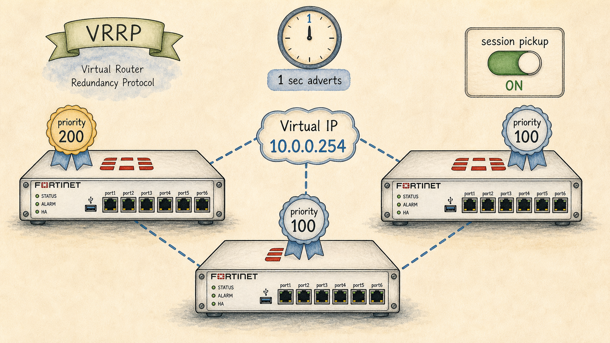

Ready to Begin the Session
| Official NSE7 EF Blueprint Objectives |
|
| Prerequisites | Session 18: FGSP — Session Synchronization |
| Estimated Duration | 25 minutes |
| Phase | Phase 4 — High Availability: FGCP, FGSP, VRRP |
Session 19 — VRRP, Failover Timers & Session Pickup Where we are in the NSE7 journey: Sometimes the second box isn't even a FortiGate — it's a router, a firewall, anything that speaks VRRP. We close the HA phase with the protocol-level answer. The problem we're solving today: VRRP is the lowest common denominator, used when FGCP/FGSP can't run (mixed vendor scenarios). The exam expects you to know its timers and limitations relative to FGCP. Session goal: Compare FGCP, FGSP and VRRP convergence in milliseconds and explain what 'session pickup' actually costs. Key concepts: • VRRP groups, priorities and virtual router IP • Failover timer tuning (advert interval, master-down) • Session pickup — restoring state at the new master • Comparison: FGCP heartbeat vs VRRP advert timer • Hybrid: VRRP for L3, FGSP for session state
Where We Are in the NSE7 Journey

Three FortiGates running VRRP, sharing one virtual IP.
Sometimes the second box isn't even a FortiGate — it's a router, a firewall, anything that speaks VRRP. We close the HA phase with the protocol-level answer.
The Problem We're Solving Today
VRRP is the lowest common denominator, used when FGCP/FGSP can't run (mixed vendor scenarios). The exam expects you to know its timers and limitations relative to FGCP.
Key Concepts
- VRRP groups, priorities and virtual router IP
- Failover timer tuning (advert interval, master-down)
- Session pickup — restoring state at the new master
- Comparison: FGCP heartbeat vs VRRP advert timer
- Hybrid: VRRP for L3, FGSP for session state
What We Discovered Together
Parsed from the persistent session summary produced at the end of the Socratic investigation. Use it to rebuild context before a review or a lab.
Session Information
- Session Number19
- TopicVRRP — Virtual Router Redundancy, Failover Timers & the Session-Pickup Myth
- CertificationFortinet NSE7 Enterprise Firewall 7.6
- Blueprint Domain1.3 — Configure different operation modes for an HA cluster
- DateJuly 2026
Story Progress
Setting: Vaultline Financial — the Meridian branch, two weeks after the dual-running VRRP pair went live (the thread opened back in Session 15 and left pending ever since).
This session finally CLOSES the long-outstanding Meridian branch VRRP cutover thread. Marcus scheduled the final cutover test before Priya would sign off on decommissioning the ageing third-party router. The test: the FortiGate sits as VRRP backup, the third-party router is master (and, as it turns out, the IP address owner). Marcus pulled power on the third-party router mid-morning under light load and watched.
Observed results — two anomalies that drove the whole investigation:
1. The FortiGate took over as master in ~4 seconds, not the ~1 second the team had seen from the HQ FGCP cluster back in Sessions 15/16.
2. 3 of 12 active sessions in Marcus's capture hard-dropped (including an SSH session to a branch switch) — full connection resets, not hiccups. The other 9 survived.
Marcus flagged it as a possible downgrade ("slower AND stuff still died — is VRRP just worse?"), which became the session's central mystery.
Characters continued: Marcus (NOC engineer, ran the test and raised the anomalies), Priya (Head of Network Security, awaiting sign-off to decommission the old router).
Outstanding threads carried forward, untouched this session: Priya's FGCP A-A traffic-mix decision (S17), the VDOM partitioning / virtual clustering implementation debt (S02/S15/S16), the S02 junior engineer template-copy mystery, and the second-datacenter FGSP hands-on configuration (S18). With Meridian now resolved, the HA phase (Sessions 15-19) is effectively complete — the natural pivot is into OSPF/BGP routing, which the official curriculum places immediately after HA.
Concepts Learned
- Layer 3 (endpoint ARP): UNCHANGED. Endpoints keep 192.168.10.1 -> 00-00-5E-00-01-0A in cache; still correct because the new master answers for the same vMAC. Endpoints notice nothing.
- Layer 2 (switch CAM table): STALE. The switch still forwards the vMAC toward the dead router's port. The new master fires a gratuitous ARP whose real job is to make the switches relearn the CAM entry and move it to the FortiGate's port. GARP is for the switch, not the endpoints.
Master_Down_Interval = (3 x Advertisement_Interval) + Skew_Time
With the default 1-second advert interval, the backup waits ~3+ seconds of silence before it is even permitted to declare the master dead. Skew time is a small priority-weighted fraction (higher-priority backups jump in slightly sooner). This ~3-4s window is exactly where Marcus's 4 seconds went — NOT the takeover, which (vMAC claim + GARP) is milliseconds.
- Long-lived / stateful / NAT'd sessions arrive as out-of-state packets on the new master and are DROPPED (the 3 casualties).
- Short / stateless / easily re-established flows just build a fresh session and nobody notices (the 9 survivors).
Crucially: tuning the timer would NOT have saved the 3 sessions. State loss is architectural, not a timing problem. If sessions must survive, the timer is the wrong knob — you need session synchronization, i.e. FGCP or FGSP.
One-line thesis: VRRP gives you a surviving gateway ADDRESS, never a surviving SESSION.
My Understanding
Strong reasoning demonstrated- Correctly stated, unprompted, that a FortiGate would not sync sessions with a non-FortiGate peer.
- Reached the correct SHAPE of the master-down mechanism independently ("monitor for dropped frames, take over after enough are missed"), then correctly identified the flap risk when tightening the timer without being led there.
- Nailed the subtle L2/L3 split: recognized that endpoint ARP does NOT need to change, AND correctly identified that a gratuitous ARP is needed so the SWITCH relearns which port the vMAC lives behind. This is the exact distinction the exam uses as a distractor, and the student reasoned straight to it.
- Correctly predicted that many TCP sessions survive a sub-second gap via retransmission.
- On the vMAC, initially framed it as the two boxes needing to "agree on who processes the front-facing vMAC." The word "agree" was the misconception — corrected via hints toward the idea that the vMAC is computed independently from the shared VRID (00-00-5E-00-01-{VRID}) with no negotiation at all. Student then landed on "same VRRP language + virtual IP," and was given the precise VRID-byte formula.
- On the master-down timer, borrowed the "miss 3 hellos" shape from OSPF/HSRP; corrected to VRRP's actual (3 x advert) + skew formula.
- The full mentor-instructions block was pasted into the chat again multiple times (continuing the pattern from Sessions 17/18). This session the student explicitly asked WHY it kept appearing; we worked out together that it arrives as user message text (client-side auto-insertion), not something the model fetches. Student now aware; no further friction expected.
Troubleshooting Experience
The whole session was a single design-validation troubleshooting exercise driven by two observed anomalies (4s detection, 3 dropped sessions). Methodology reinforced: separate the two symptoms and test whether they share a root cause BEFORE assuming they do. They did not — the 4 seconds is a timing property (master-down formula) and the 3 drops are an architectural property (no state sync). The key engineering-judgement lesson: identify which knob actually addresses which symptom. Tuning the advert timer fixes detection time but has ZERO effect on session survival — reaching for it to solve the drops would be a classic wrong-knob mistake.
Connections
- Builds onSession 15 (the original three-way FGCP/FGSP/VRRP framing — "VRRP = open-standard identity float, no state ever"), Session 16 (FGCP election/priority/override, gratuitous-ARP-on-failover concept, virtual MAC), and the recurring config-vs-state distinction from Session 15 (config restores what a box was told; it can never restore live state).
- Resolvesthe Meridian branch VRRP cutover thread pending since Session 15.
- Sets upOSPF/BGP dynamic routing (the curriculum's next lesson block, and the study guide's own closing line points there). Also leaves FGSP hands-on config and VDOM partitioning as available technical arcs.
Important Takeaways
- VRRP = surviving gateway ADDRESS, never a surviving SESSION. The single most important sentence of the session.
- vMAC is computed, not negotiated: 00-00-5E-00-01-{VRID}. This is WHY VRRP is vendor-neutral.
- IP address owner = automatic priority 255, beats any configured priority.
- Failover L2/L3 split: endpoint ARP stays valid; GARP exists to fix the SWITCH CAM table.
- Master_Down = (3 x Advertisement_Interval) + Skew_Time. Default advert 1s => ~3-4s detection.
- Timer tuning trades detection speed against flap risk — and does NOTHING for session survival.
- If sessions must survive a gateway failover, VRRP is the wrong tool. Use FGCP or FGSP (stateful).
Future Session Notes
Concepts requiring reinforcement- The (3 x advert) + skew formula at recall level — likely a direct exam calculation/identification item.
- vMAC formula 00-00-5E-00-01-{VRID} — recognition level; Fortinet may show a MAC and ask which VRID.
- The L2/L3 GARP distinction — high distractor value; re-quiz cold.
- vrdst / destination monitoring (touched only lightly this session; the master stops advertising if it loses reachability to a monitored remote address like 8.8.8.8) — worth a dedicated pass, as S15 also flagged it as "brief."
- In 1 session: cold-open "a MAC of 00-00-5E-00-01-14 appears on the wire — what's the VRID, and is this FGCP or VRRP?" (0x14 = VRID 20).
- In 2 sessions: "failover took 3+ seconds and two long sessions dropped — which is a timing problem and which is architectural, and which knob fixes each?"
- In 3-4 sessions: the S15-planned scenario mixing FGSP + VRRP + an FGCP cluster acting as an FGSP peer.
- HA phase (S15-19) now complete; Priya can sign off decommissioning the Meridian third-party router. Natural pivot to OSPF/BGP.
- Priya's A-A traffic-mix decision (S17), FGSP hands-on config (S18), and VDOM partitioning (S02/S15/S16) all remain open.
- The junior-engineer template-copy mystery (S02) is still unresolved and available for a change-process scenario.
Audio Podcast Prompt (For "The Packet Path")
Generate a two-host audio podcast script for "The Packet Path," a storytelling podcast for network engineers. Host: Alex, an experienced network security consultant. Co-host: Sam, smart and curious, asks clarifying questions. Tone: intelligent, conversational, true-crime documentary style for network engineers. Episode title: "Four Seconds and Three Ghosts." Setting: Vaultline Financial's Meridian branch, the morning of the final VRRP cutover test.
Act 1 — The Test: Marcus schedules the cutover before Priya will let him decommission the ageing third-party router. The FortiGate is VRRP backup; the old router is master. Marcus pulls the power. Two things go wrong at once: takeover takes ~4 seconds (four times slower than the HQ FGCP failover everyone remembers), and 3 of 12 live sessions hard-drop while 9 sail through untouched. Marcus's verdict: "Is VRRP just... worse?" Alex should resist answering and instead pull Sam toward the real question — are these two symptoms one story or two?
Act 2 — The Two Clocks and the Empty Table: Alex separates the mysteries. The 4 seconds isn't the takeover (vMAC claim + gratuitous ARP is milliseconds) — it's the master-down interval, (3 x advert) + skew, the mandated silence a backup must sit through before it's even ALLOWED to act. Then the harder reveal: the 3 dead sessions have nothing to do with the clock. VRRP inherits an IP and a MAC and NOTHING else — no session table, no NAT bindings. Long-lived flows arrive out-of-state and die; short flows just rebuild. Sam should try to "fix" it by tuning the timer, and Alex should spring the trap: faster failover would not have saved a single one of those three sessions. Land the closing line: VRRP gives you a surviving gateway address, never a surviving session — and if you need the sessions, that's FGCP or FGSP, not a faster timer.
Include: the vMAC-is-computed-not-negotiated insight (00-00-5E-00-01-{VRID}) as the "why it works across vendors" aha; the L2-vs-L3 gratuitous-ARP subtlety (the endpoints were fine; the SWITCH was the one that needed telling); and the IP-address-owner priority-255 detail as a nice bit of texture. Keep it under 4,922 characters. Duration target: 20-26 minutes.
Guides, Bites & Nibbles
Additional resources sorted to this session — deeper guides, focused explainers, and quick-reference cards.